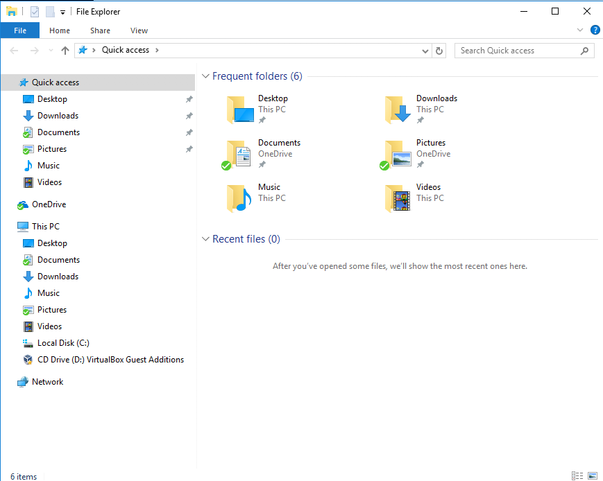
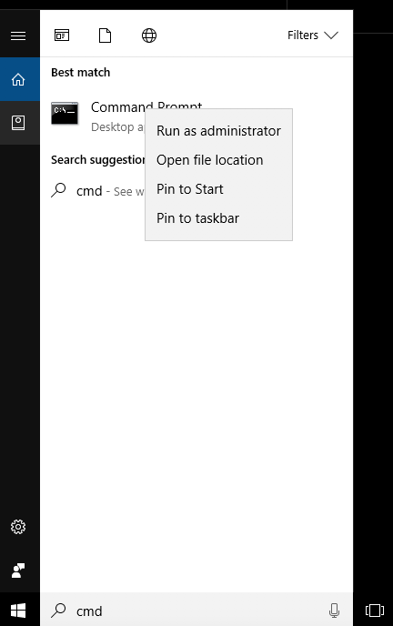
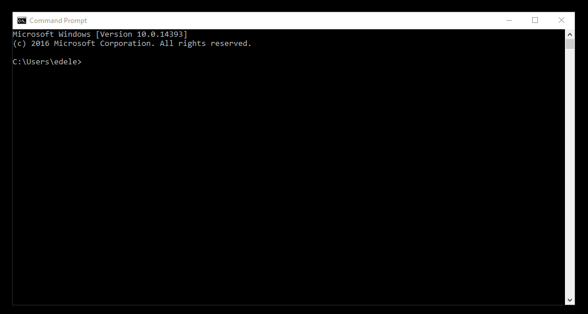
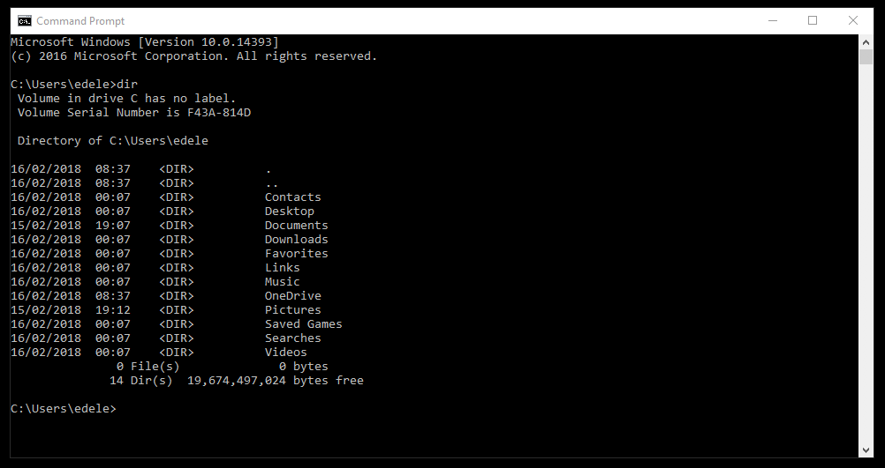
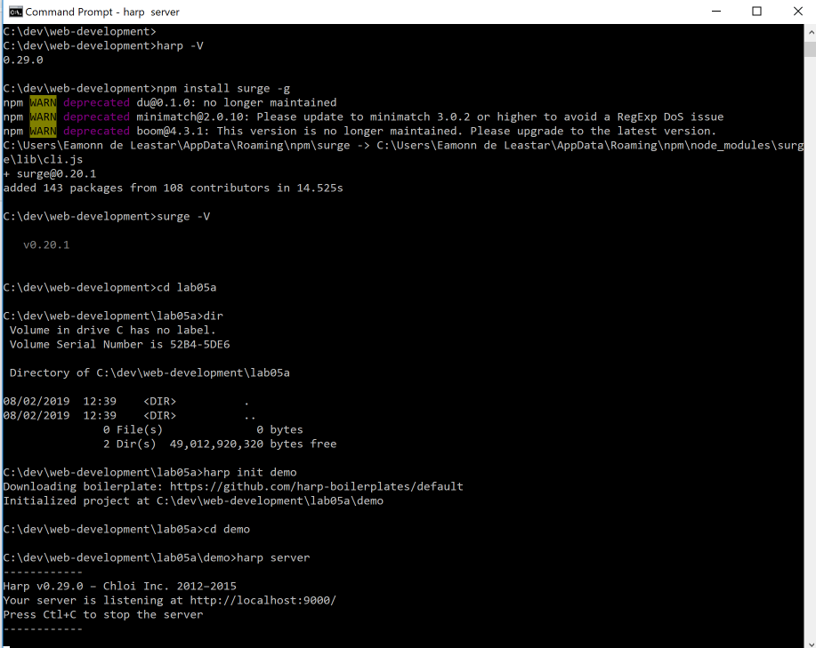

Objectives
Install software tools to serve a web site locally and also to deploy the web site to a public web server.
Explorer & Command Prompt (Windows)
Explorer
You may be alrady familiar with the windows Explorer application:

In particular, you should get used to undersanding and managing the structure of folders based in on your C: drive:

Your web development folder might be something like this:

Command Prompt
Open a command prompt on Windows. The easiest way to do this is in Windows to type 'cmd' in the Search Box on the Windows start menu:

From now on, you will be using this command line regularly - so we can 'pin' it to the task par for convenience (do this by right clicking):

This should make it appear on the end of the taskbar like this (icon on extreme right):

Now, you can launch it from the taskbar whenever you need it:

Try out the dir command:

Also experiment with closing and reopening the console application.
Finder & Terminal
On Mac, the equivalent of Explorer is Finder:

For the Command prompt, install Iterm2:
This is a move convenient implementation of the build in terminal.
Command Line (Windows)
This is an alternative interface to Windows which it is important to become familiar with. In this window you can type what are sometimes called 'DOS' commands. These commands let you have a finer level of control of your PC, and are particularly important for programmers to master.
Here are some simple commands:
- dir
- list all files in a directory
- cd ..
- change to a parent directory
- cd
<directory name>- change to a specific directory
It is essential that you become adept at these commands, and a few others, gaining confidence in relating the command prompt and the explorer view.

In the above, we have started a command prompt, and entered the following commands:
cd /
cd dev
cd web-development
dirThese commands did the following:
- change the folder the 'root' of the current drive
- change into the 'dev' folder in root
- change into the 'web-development' folder in 'dev'
- list tall the files and folders in that folder
Note in all of the above that the 'prompt' in the command window is always showing the 'current' drive/directory. Try now to perform the equivalent on your workstation. You may not have exactly the same file names ... so adjust as necessary.
Also, if you have a 'space' in your directory (a bad idea generally), then you will have to use quotation marks in the commands. This can get difficulty to type, so in general it is best to adopt the following conventions:
- Never use spaces in directory or file names
- Never use upper case in directory or file names
- If you wish to use readable multiple words for a directory or file name, separate the words with '-'. e.g.
- web-development
- java-projects
Perhaps you might take this opportunity to adjust your workspace and projects to adopt the above conventions. If you do, then you will find that using DOS commands to navigate your folders will be considerably easier.
Before going on to the next step, make sure you are comfortable navigating in the command console around the file system, and in particular make sure you can navigate to your web development workspace.
Also, get used to using File Explorer in parallel - keeping an eye on where you are in the folder tree structure.
Finally, this 15 minute tutorial on the DOS command line might be worth skimming:
The Command line we have been touring here has largely been superseded by a newer application called Powershell. However, we will stick to the this one here for the moment.
Command Line (Mac)
Commands on the mac as similar - review this short tutorial here for the basics:
Installing Git, Node.js, Harp.js and Surge
Install Git
Although we will not be using it directly for the moment, download and install Git:
You can accept all defaults during the install.
Installing Node
We will now install a set of tools to enable us to work with templates in html.
First, install an application called node.js on your workstation:
Download, select and install the LTS version (on the left) for your platform. Accept all defaults during the installation.
If the installation was successful, then you will have a new command called node installed on your system. You can test it by entering this on a command prompt:
node -vThe response should be a version number:
Install Harp
If node is installed, then we can install some additional tools. Visit this site:
Install the application harp.js application. The procedure should be relatively straightforward, just enter the this command at the prompt:
npm install -g harpThis is the same for Mac or Windows.
This will take a few minutes (you might need to press return to move it along on Windows).
To check if it installed successfully:
harp -V(Note: capital 'V'). It should respond with a version number:
0.29.0Install Surge
With node and harp installed - you will also need to install:
The simplest way to do this is to open a terminal and enter:
npm install surge -gAfter a minute or less it should complete. If successful, try this:
surge -VWe should get:
0.20.1We now have 2 key commands installed in our workstations:
- harp
- surge
We will use both of these in the reaming steps.
Using Harp
Create a new folder for your project in your web-development folder called lab-05a. Then change into this folder using the cd command.
Before entering the next few commands, make sure you know EXACTLY where your command prompt session is located in the folder structure. Perhaps you may be somewhere like:
C:\dev\web-development\lab-05a
See the previous step for guidance on this. If you are confused as to which folder tour command prompt is based in, just enter this command:
dirThis will list the current directory contents.
Using Harp
If harp was successfully installed, from the command prompt try this command (make sure you are in the lab-05a folder) :
harp init demoThis will respond with:
Downloading boilerplate: https://github.com/harp-boilerplates/default
Initialized project at /Users/edeleastar/repos/wit-hdip-comp-sci/web-development/lab05a/demoBack in the command prompt (again, make sure you are in lab-05a directory), enter:
cd demo
harp serverOn windows, you may get a dialog indicating from your firewall asking for permission to run this application. Select 'Allow Access'
You should see this on the command prompt:
Harp v0.25.0 – Chloi Inc. 2012–2015
Your server is listening at http://localhost:9000/
Press Ctl+C to stop the server
------------Here is a screenshot of the last few commands:

Now browse to this url here:
and you should see this page:

To stop 'serving' the page, enter Ctrl-C in the command prompt:
Harp v0.25.0 – Chloi Inc. 2012–2015
Your server is listening at http://localhost:9000/
Press Ctl+C to stop the server
------------
^CProject Setup
Make sure your command prompt is running C:\dev\web-development\lab-05a> folder (or whatever is the correct folder on your workstation). If you are following on form the last step, then you may wish to enter:
cd ..first. Alternatively, you can enter:
cd /
cd dev
cd web-development
cd lab-05ato get there explicitly.
Create a new project from the command prompt now by entering the following command:
C:\dev\web-development\lab0-5a>harp init grid-navOpening the folder should reveal these files:

A new folder called grid-nav has been created. We will use files like the one generated later - but for the moment delete all of these files and replace them with the following file called harp.json:
harp.json
{
"globals":
{
}
}You will need to use Sublime to create this file (copy/paste the above) - and then save it into the new project folder.

Now get the solution to last weeks lab:
Unzip the project, and place its contents into a folder called public that you create in the lab-05a folder:

Look carefully at the above, your project should be exactly as shown. I.e. all the project files + folders are in a public folder inside the grid-nav folder in the lab-05a folder. If the structure does not match this, then the next steps will not work correctly.
Make sure it is configured like this before going on to the next step.
Deployment
Now we will serve the web site locally with this command:
harp serverThis will look like this:
C:\dev\web-development\lab0-5a\grid-nav>harp server
Your server is listening at http://localhost:9000/
Press Ctl+C to stop the serverNotice, again, that the command is executed from within the lab-05a/grid-nav directory.
Verify that the site is available here:
It should look like this:

Terminate the server again with ^C:
Your server is listening at http://localhost:9000/
Press Ctl+C to stop the server
Terminate batch job (Y/N)? y
^C
C:\dev\web-development\lab0-5a\grid-nav>We are about to try out the 'surge' service - have a quick look at the 2 minute video here to set the scene:
From still within the lab0-5a/grid-nav folder, enter the following 2 command:
harp compile
surge ./wwwOn windows, this may look like this:
C:\dev\web-development\lab0-5a\grid-nav>harp compile
C:\dev\web-development\lab0-5a\grid-nav>surge ./www
Welcome to Surge!
Please login or create an account by entering your email and password:You are now about to create a new account with the surge.sh web service.
Enter credential to create a new account now (press return after each entry) - be sure to remember the password. Surge will then deploy the site to a public server:
project path: C:\dev\web-development\lab0-5a\grid-nav>
size: 34 files, 2.3 MB
domain: dull-pet.surge.sh
upload: [====================] 100%, eta: 0.0s
propagate on CDN: [====================] 100%
plan: Free
users: youremail@domain.com
IP address: 192.241.214.148
Success! Project is published and running at dull-pet.surge.shThe domain can be customised - in the above example 'dull-pet' was generated, you can replace this with something more suitable (but unique, so perhaps include your initials, the current date or something that may not be used by someone else).
Open a browser to inspect the running site. It might be something like:
(change dull-pet to the domain generated by your command)
This is now deployed and accessible globally! Make sure the navigation works as expected.
Removing Web Sites from Surge
If you have published a number of sites you may want to recall what domains were generated, or perhaps remove some or all of the published pages.
The various commands are listed here:
To list all web sites:
C:\dev\iot-web>surge list
email: youremail@domain.com
token: *****************
iot-1.surge.sh
dull-pet.surge.sh
highfalutin-exchange.surge.sh
C:\dev\iot-web>To remove (delete) a site from the server use the teardown command:
C:\dev\iot-web>surge teardown highfalutin-exchange.surge.sh
email: youremail@domain.com
token: *****************
domain: highfalutin-exchange.surge.sh
Success - highfalutin-exchange.surge.sh has been removed.
C:\dev\iot-web>Exercises
See if you can deploy one of your other lab projects using surge. Perhaps the 'bundle store' project from lab03a.
Here are the steps you will need to do this:
1: Verify harp & surge installed
Make sure you have the node+harp+surge packages installed on your computer. Open a command prompt and enter
node -v
harp -V2: Prepare Project Folder
Create a new (empty) folder to contain your project. Into this folder place the following file:
harp.json
{
"globals":
{
}
}3: Copy Project Files
Place your entire project into a folder called public inside this project folder (as we did in step 05).
4: Run the Server
From the command line, enter the command:
harp server5: Verify Site
Verify that your side it available on:
- <http://localhost:9000>If your site has 'index.html' as its main page, then the above link will work. If the main page is named something else, then you will need to append the correct file name. E.g.:
- <http://localhost:9000.home>6: Publish Site
Terminate the server with ^C, and then enter:
harp compile
surgeThis will deploy the web site:
project path: G:\dev\iot-web\
size: 34 files, 2.3 MB
domain: XXX.surge.sh
upload: [====================] 100%, eta: 0.0s
propagate on CDN: [====================] 100%
plan: Free
users: youremail@domain.com
IP address: 192.241.214.148
Success! Project is published and running at XXX.surge.sh7: Verify Deployment
Verify that the site is available on the domain. You will have the opportunity to change the domain XXX